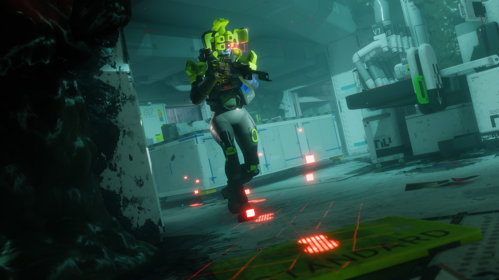

Weaving

Shells are made by the Japanese biotech corporation Sekiguchi Genetics. The shell is woven. Gene-modified silkworms (type WEAVEworm; the Codex slips in a Latin joke, Bombyx mori, the real domestic silkworm) spend up to eight hours building the body in layers: synthetic organs first, then the frame, then the outer skin, all of it synth-silk. Inside sits the neural block, with biosync and memo-layers, implanted through "micro-fractional instances", and that is where your mind lives. Shell blood, by the way, is blue. canon
- 01Synthetic organssynth-silk
- 02Framesynth-silk
- 03Outer skinsynth-silk
- 04Neural blockbiosync, memo-layers
- 05Mind uploadCyberAcme
0 hup to 8 h of WEAVEworm weavingtransfer
The worm lineage
- EARTHworm2198 // waste recycling
- SILKwormsuccessor line
- WEAVEwormweaves shells today
The waste-recycling EARTHworm (2198) led to the SILKworm line, and SILKworm led to WEAVEworm. Sekiguchi has collected awards from Earth institutions more than once for its emergency consciousness-ejection neural networks, and the Codex entries never let you forget it. canon
Who does what
Prints the shell body itself.
Owns the mind, plus its backups and transfers.
Sekiguchi prints the body. Plenty of guides, this one included before a reader corrected it, credited CyberAcme with printing it. canon (thanks to u/fedonn for the tip)